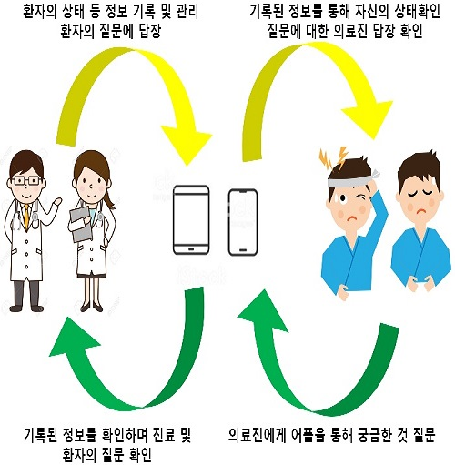

만들고 싶은 IT 서비스 소개
제가 만들고자하는 서비스를 소개해 드리겠습니다.
우선 제가 만들고 싶은 서비스의 모토는
보다 더 편하고 유용하게
입니다.
현대사회는 전자기기 전성시대라 할 수 있을 정도로
일상생활 모든 분야에서 전자기기의 의존도가 높습니다.
그 중에서 제가 선택한 분야는 의료계입니다.
통계청이 조사한 자료에 의하면 2015년 한 해동안
각종 질병에 걸린 환자가 11160185명이라고 합니다.
그 중 의료기관에 입원한 환자의 수는 9490057명으로 기록되어있습니다.

이 많은 환자들의 각자 성별, 나이 그리고 병명, 증상 등은
전부 다 다릅니다. 이런 각각의 개인정보들은
병원 내 컴퓨터 혹은 문서로 보관 및 기록을 합니다.
하지만 저는 요즘 현대사회에 걸맞게 더 편리하게
많은 환자들을 전자기기로 기록 및 관리하면서
동시에 환자 및 환자의 보호자에게도
기록한 내용들을 공개하는 것이 좋다고 생각했습니다.
그래서 저는 환자의 병명과 증상 그리고
현재 환자 상태 등을 보호자 및 담당의사 및 간호사들이
언제 어디서든 확인할 수 있는 어플을 만들고 싶습니다.
제 과거 경험에 의하면 저는 전염성이 있는 질병에 걸려
병원에 격리된 적이 있었습니다. 저는 제 질병이 어느 정도 진행되었으며 어떻게 하면 빨리 완치할 수 있는지
궁금했습니다. 입원동안 많은 수액과 주사가 투여됬는데 저는 어떤 효과가 있는 주사를 얼마만큼 투여했는지 알 수 없었습니다. 간호사들도 바쁜 와중에도 투여한 주사를
일일이 수기로 기록하였습니다.무엇보다 전염성이 있는 제 질병으로 인해 저희 가족들은 입원한 저를 보지 못하고 저도 제 상태를 정확히 알지 못해 전화로도
상태를 알려줄 수 없어 걱정을 많이 하셨습니다.

이런 제 경험을 토대로 어플리케이션 혹은 프로그램을
통해 기록을 하면 더 편할 것 같다 생각했습니다.
이 어플을 이용하면 환자, 간호사, 의사,
모두 편할 수 있습니다. 앱은 크게 정형외과, 신경외과
등등의 카테고리로 나뉩니다. 또 정형외과 내에서도 환자들을 분류합니다. 그래서 환자 한명 한명의 상태 페이지를 생성합니다. 환자의 페이지에 들어가서 그 환자의 질병,
현재 상태, 투여한 주사와 시간, 수술 여부, 금식 여부,
담당의사 권장 사항, 예상 퇴원일 등등을 기록합니다.
그 기록들을 환자와 보호자 또한 볼 수 있습니다.
기록들을 보면서 환자들은 자신의 상태를 체크하면서
권장사항 등을 보면 더욱 더 빠르게 치유할 수 있을 거라 생각됩니다. 또한, 궁금한 것이 있으면 앱 내에서 환자와 간호사 메시지로 질의응답을 할 수 있습니다. 이렇게 하면 간호사, 의사로서도 환자를 관리하기 편리하면서
환자들이 궁금해하는 질문에 직접 대답해주는
빈도가 줄어 시간도 절약할 수 있을 거라 생각됩니다.

통신으로 이렇게 병원과 환자측을 연결하면 환자 본인도 자신의 상태를 수시로 체크할 수 있습니다. 또한 보호자도 알림서비스로 보호자가 직장에 있는 등 자리를 비우게
될 시 병원에서 기록한 환자의 상태를 수시로
체크할 수 있으면 걱정도 덜 할 것입니다. 의료진 측이
기록한 자료들을 어플로 공개관리 함으로써 환자나
보호자들은 병원을 더욱 신뢰할 수 있으며 병원도
신뢰성이 높아지면 더 좋은 결과를 얻을 수 있습니다.
뿐만 아니라 간간히 발생하는 의료사고 예방에도
도움이 될 수 있다고 생각합니다.
이처럼 병원에서도 스마트폰 및 스마트패드 등 전자기기 하나로 의료진과 환자측을 연결할 수 있는 어플을 만들어
병원을 등록하고 사용하면 더 편리하고 효율적인 운영을 할 수 있을 것이라 생각되며 또한 국내 의료계 발전에도
큰 도움을 줄 수 있을거라 생각합니다!
자기 소개
개발자를 꿈 꾸고 있는 상명대학교 16학번
컴퓨터과학과 22살 정수환입니다.
저는 학창시절 코딩이 무엇인지 몰았을 뿐만 아니라
관심도 전혀 없는 학생이었습니다. 성적에 맞춰 대학교에 진학하게 된 저는 전공 수업 도중 모든 인터넷 페이지는
코딩으로 만들어진다는 것을 배웠습니다. 매우 당연한
것 이었지만, 컴퓨터를 전혀 몰랐던 그때의 저에게는
큰 문화 충격이었습니다. 그 이후 저는 인터넷 페이지를
들어갈 때마다 페이지 소스 보기를 불러 보는 습관이
생겼습니다. 처음엔 몇천줄 몇만줄로 만들어진 페이지
소스를 보면서 이걸 구상하고 구현한 개발자들은 이걸
만들면서 얼마나 고통스러웠을까 생각하였지만 점차 제가
코딩에 재미를 느끼게 되자 페이지를 만든 개발자들이
고통 받으면서 구현하진 않았겠구나 느겼습니다.
그리고 페이지를 완성하고 나서의 성취감, 뿌듯함이
저는 매우 궁금했습니다. 이후 군에 입대하여
긴 시간동안 생각하였습니다.
현대 사회에서 컴퓨터나 스마트폰 같은
스마트기기 없이 살 수 있을까?
앞으로는 얼마나 더 편할 기술들이 개발될까?
저는 이런 의문들에 이렇게 답하기로 했습니다.
"그 기술들은 내가 개발해야겠다."
Photographs By. 구글 이미지 검색